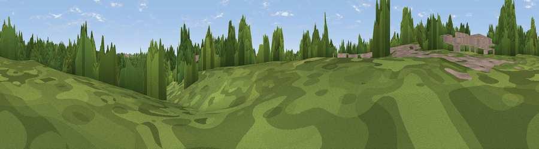

Viewpoint near Shadwell
#45631 in England · top 97% of its area beats it · near ShadwellThe view, rendered

A 360° render of this exact spot computed from the terrain model, tree cover and land cover — summer colours, afternoon light, calibrated against photographs of famous viewpoints. Real trees, hedges and buildings will differ in detail.
The panorama
Grey silhouette: terrain skyline in each direction (720 bearings, Earth curvature and refraction included). Dashed green: skyline with trees (+15 m) and buildings (+8 m) as obstacles. Blue strip: how far the ground is visible on each bearing.
Where the view opens
Wedge length = distance to the farthest visible ground on that bearing (vegetation-aware). Rings at 10, 25 and 50 km.
What fills the view
60% woodland · 25% grassland · 6% built-up · 5% cropland · 3% water
Angular shares of the visible panorama (visual magnitude), not map area. Landscape diversity 0.47 (0–1 Shannon).
Key numbers
More beautiful places nearby
The staircase of upgrades: each row has a higher view potential than everything closer. Driving times are estimates from straight-line distance, calibrated against real road routing — check an actual route before setting out.
| Place | Direction | Drive | Score |
|---|---|---|---|
| Hill 60 | S · 1 km | ~2 min | 30.5 |
| Viewpoint near Shadwell | ENE · 3 km | ~7 min | 53.8 |
| The Bowshaws | NW · 7 km | ~14 min | 59.6 |
| Viewpoint near Kirkby Overblow | N · 10 km | ~19 min | 63.5 |
| Rawdon Trig point | W · 11 km | ~21 min | 69.6 |
| Rawdon Billing | W · 11 km | ~21 min | 73.0 |
| Viewpoint near Otley | WNW · 14 km | ~25 min | 77.5 |
| Hood Hill | NNE · 46 km | ~67 min | 79.6 |
53.84101, -1.50175 · source: osm viewpoint · position refined by local search. Computed location — check access rights before visiting.